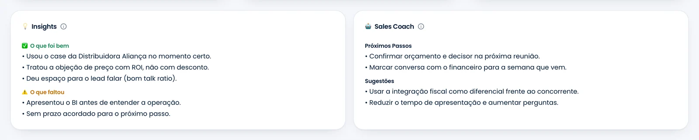
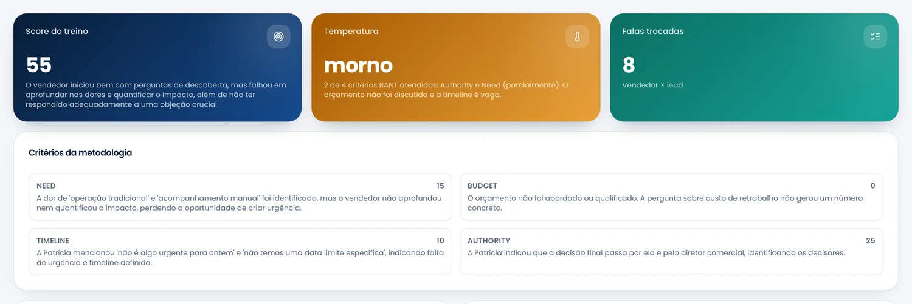

O copiloto inteligente das suas vendas: grava, analisa com a metodologia da sua empresa e orienta o vendedor ao vivo, na tela, com a frase certa para o momento.
14 dias, sem cartão. Google Meet e Microsoft Teams, pela extensão Chrome.
Por que o Sales Coach existe
Como funciona
Um clique na extensão, no Meet ou no Teams. Ou envie o arquivo e o link depois — MP3, MP4, Google Drive.
Transcrição com falas separadas, score, temperatura da agenda, cada critério da sua metodologia pontuado e justificado, objeções e sinais de compra.
Durante a reunião, o coach diz o que falar agora. Depois, o gestor vê o ranking, os gaps e onde o discurso saiu do portfólio.
As telas abaixo são do sistema rodando — não são ilustração.
Minutos depois da conversa, vendedor e gestor veem a mesma coisa: score, temperatura pela metodologia da empresa e cada critério com a justificativa tirada do que o lead disse.

A análise não para na nota. Ela aponta o que o vendedor fez certo, o que deixou passar e o que fazer na sequência — e confere se o discurso bateu com o portfólio da empresa.

Score médio, evolução mês a mês por executivo, distribuição de temperatura das agendas e em quais critérios o time mais falha. Em vinte minutos, o que levaria uma semana de escuta.

A extensão acompanha a conversa no Meet ou no Teams e mostra ao vendedor a frase exata para dizer nos próximos segundos — pela metodologia da empresa, com o portfólio certo, sem inventar preço ou funcionalidade.

A IA assume o papel do cliente, com uma dor do seu catálogo e as objeções que realmente apareceram nas suas reuniões. Por texto ou por voz. No fim, a conversa recebe a mesma nota e o mesmo feedback de uma reunião real.

O lead simulado não facilita — ele levanta as objeções que o seu time ouve de verdade.

Mesma metodologia da reunião real: critério a critério, com o que faltou.
Quem entrou ontem pratica a conversa difícil dez vezes antes de fazer a primeira — sem gastar um lead nisso.
Um assistente em qualquer tela do sistema, que consulta as agendas de verdade antes de responder — não um resumo genérico. Pergunte em português e ele busca, cruza e responde.
Respeita o papel de quem pergunta: vendedor vê o que é dele, gestor e admin veem o time.

O Sales Coach se conecta ao que o time já usa. A reunião acontece onde sempre aconteceu, e o resultado dela vai parar onde sempre deveria estar.
Sem trocar de ferramenta no meio da reunião. Sem depender do gestor ouvir gravação.
Planos
Para o primeiro time que quer parar de perder reunião sem aprender nada com ela.
Para operações com processo definido, que querem a metodologia da casa dentro da ferramenta.
Para operações grandes, com vários times, integrações próprias e exigências de segurança.
Contrato anual
Perguntas frequentes
Sim. BANT, MEDDIC e SPIN vêm prontos, mas você define critérios, pesos, faixas de temperatura e regras específicas da sua operação. A análise e o coach ao vivo passam a seguir isso.
Pela extensão Chrome, no Google Meet e no Microsoft Teams (web). Para outras plataformas, a gravação pode ser enviada depois para análise.
Só clicar em gravar. A transcrição e as dicas aparecem num painel discreto sobre a reunião; ao final, a gravação sobe sozinha e a análise fica pronta em minutos.
Cada empresa tem seus dados isolados — gravações, transcrições, análises e base. Vendedor vê as próprias reuniões; gestor e admin veem as do time. Links externos só existem quando você ativa, com prazo e revogação.
PDF, documentos, planilhas, links e texto. O conteúdo é extraído e usado na análise (aderência ao portfólio, cross-sell) e no coach ao vivo (citar o produto ou dado certo na hora).
Ao fim de cada reunião analisada, o Sales Coach envia para a oportunidade correspondente o resumo, os próximos passos, a temperatura e os critérios da metodologia. Salesforce, HubSpot, Pipedrive e RD Station têm conexão direta; outros CRMs entram pela API. A configuração é feita uma vez, pelo administrador.
Piloto
Em 14 dias você vê o score do time, onde o discurso sai do portfólio e como o coach ao vivo muda uma conversa. Sem cartão, sem instalação no servidor.

 Google Meet
Google Meet Microsoft Teams
Microsoft Teams Zoom
Zoom HubSpot
HubSpot Salesforce
Salesforce Pipedrive
Pipedrive RD Station
RD Station